AI特化型のプロンプトエディタ
自由に書いて、保存して、シームレスに流し込む。
AIをもっと使いこなすためのワークスペースです。
Putとは
Put は、ChatGPT や Claude といった AI チャットツールを日常的に使う人のための、macOS専用デスクトップアプリです。
チャット欄の狭い入力枠から離れた独立した編集ワークスペースで、長文プロンプトを自由に書き、保存し、必要なAIアプリへワンショットで送り込めます。
「もっとAIを使いこなしたいけれど、毎回プロンプトを書くのが面倒」「いいプロンプトを思いついても流れていってしまう」――そんなAIライトユーザー卒業層のための一段上のワークスペースです。
解決する課題
- チャット欄が狭くて長文プロンプトが書きにくい
- 改行のつもりが Enter で誤送信してしまう
- 過去の良いプロンプトを毎回書き直している
- AIアプリを行ったり来たりが面倒
独自ポイント
| どこでも呼び出し | Cmd+Shift+Space でいつでも最前面に呼び出し・隠す |
|---|---|
| 広いエディタ | チャット欄に縛られない自由な編集環境、誤送信なし |
| ペアリング送信 | 送信先アプリを選択 → Cmd+Shift+Enter で自動ペースト |
| ライブラリ管理 | タグ・検索で良いプロンプトを資産化、再利用 |
| 完全ローカル動作 | クラウド非依存、データはユーザーの手元 |
技術仕様
- Tauri 2 + React 19 + TypeScript
- ローカル（クラウド同期なし）
- 約30MB
- 日本語 / 英語（設定で切替可、初回起動時はOS言語で自動判別）
スクリーンショット
デモ動画
ロゴ素材
Orange ／ PNG ダウンロード
{kind=link}

White ／ PNG ダウンロード
{kind=link}
プレス問い合わせ
山西孝明（開発者） ｜ info@put-prompt.run
レビュー用ライセンス・素材データ等のご要望もお気軽にどうぞ。返信不要のネタ提供としての送付も歓迎します。
開発者について
山西孝明 / フリーランスWebデザイナー・エンジニア
受託のWeb制作（デザイン〜コーディング〜WordPress一気通貫）を本業としつつ、AI と協働した個人プロダクト開発に取り組んでいます。
Put は、Anthropic の Claude（Claude Code）と日々ペアリングしながら開発した、最初のリリースプロダクトです。「AIで自分の仕事を加速させたい」という自身の体験から生まれました。
本業や育児に左右されない安定した開発時間を確保するため、本来は早起きが苦手ながら毎朝5時起きの朝活を約1ヶ月間継続。平日朝の2時間を Put 開発に集中投下し、リリースまで漕ぎつけました。
ライセンス・利用について
- 紹介・レビュー: 自由にご紹介ください（PR表記は対価提供がない場合は不要です）
- 画像・テキスト引用: 本ページ内の文言・スクリーンショットはレビュー用途で自由に使用可
- レビュー用ライセンス: ご希望の方はお問い合わせください
Last updated: 2026-04-24